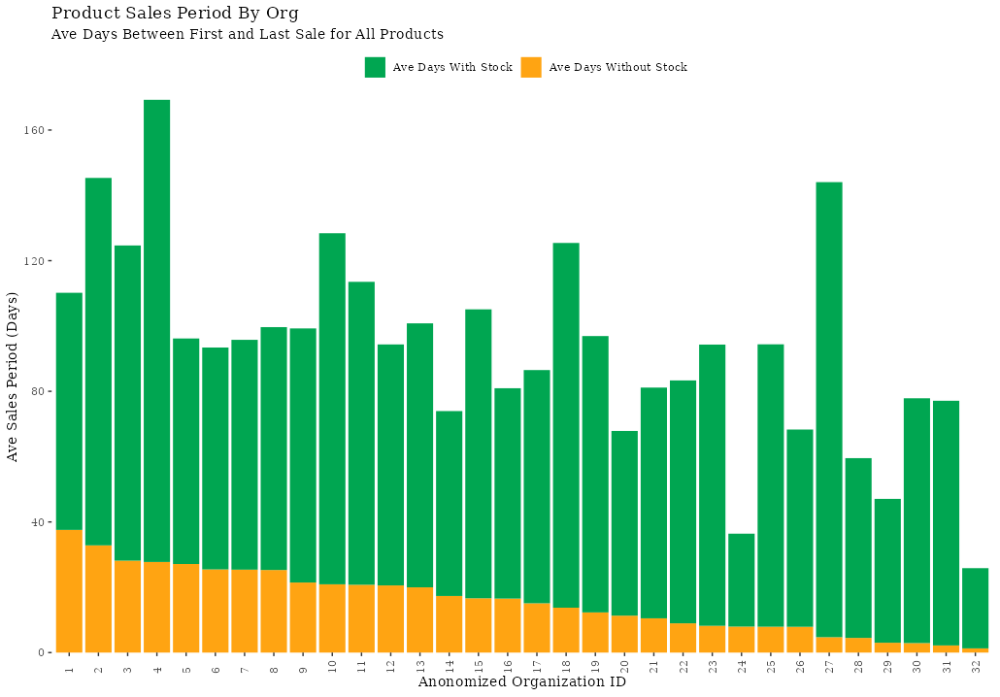
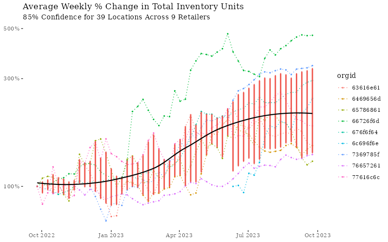
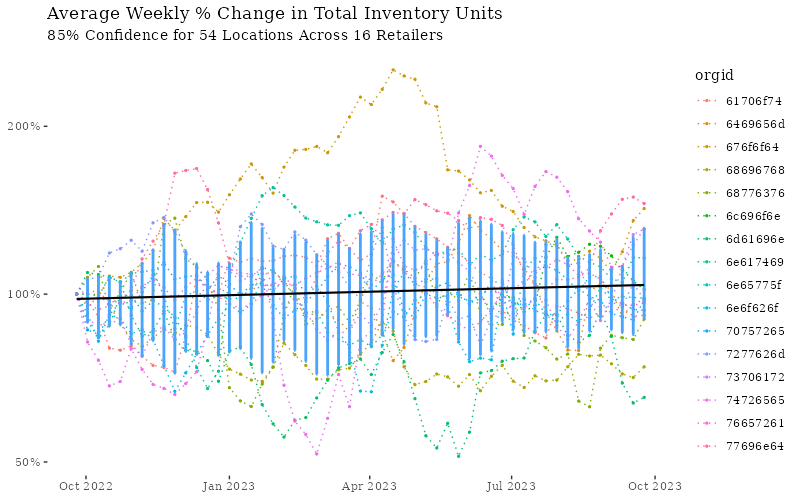
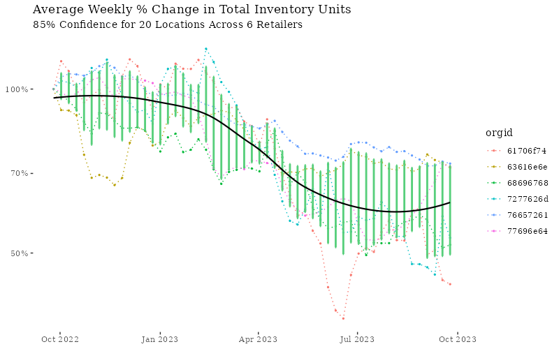

Background
This post is focused on the impact of supply chain volatility on retailer inventory overhead costs, specifically, I aim to define the supply chain problem facing cannabis retailers, and discuss strategies to reduce inventory overhead costs while ensuring sufficient product coverage1 to meet growing demand.
Exploring The Data
The data I utilized for this analysis are daily inventory snapshots beginning on 4/12/22 and ending on 9/24/23. The data for this time period includes roughly 385K unique products across 118 retail locations.
Here are a few key insights on the retailers I studied:
On average, Retailers…
- Carry 730 products in inventory on any given day, and 2,300 unique products over the course of a year
- Have 500K units across all products in inventory on a given day
- The average cost of inventory held by the retailer on a given day is roughly $120K, equating to an average of roughly $500 in costs per product in stock
- Carry products that are available to sell for 72 days of the year, while being out of stock for roughly 20% of the time between its’ first sale and last sale (see figure below)

In short, products that have reoccurring supply (resupplied more than once) during this period, tend to go out of stock every 5 days (e.g. 20% of the days within its’ sales period), causing a sales disruption. This can be seen in the figure above which shows the average sales period for products by org, and identifies the proportion of days in and out of stock during the sales period.
Supply Chain Volatility
In cannabis, we see evidence that consumer demand is much more predictable than supply. In fact, in response to this supply chain volatility, retailers are often overstocking products due to the uncertainty around future availability from suppliers. This results in growing inventory costs over time, as the natural tendency in a highly competitive industry is to ensure products are always available to meet demand. In an environment where products are highly interchangeable, such as in the cannabis space, inventory can and should be optimized to address supply chain issues.
Optimized inventory ensures that a retailer can meet changing demand without incurring additional and unnecessary inventory costs. In practical terms, over a long period of time (in the case of this analysis 75 weeks), it is reasonable to expect that inventory costs should be correlated with sales trends over the same period.
For this group of retailers studied here that show increasing inventory levels, we can see in the figure below that their trend in inventory is not correlated with growth in sales.

Results of Analysis
Of the 118 retailers whose inventory I studied over the course of 75 weeks, 82% of these stores experience highly volatile and/or growing inventory at a rate that far exceeds any growth in sales. This is very consistent with the notion that supply chain volatility leads to highly volatile retail inventory levels (both as measured by the costs to carry stock, as well as the total units on hand for any given week) and is additional evidence that overstocking is an issue affecting retailers industry-wide.
Nearly half of the retailers that comprise the 82% are experiencing highly accelerated growth in both total units on hand in a given week as well as total inventory costs carried per week. While the remaining experience unsustainable swings in total units available week to week.
Growth in Weekly Stock
The chart below shows the average weekly percent change in total inventory units on hand (all products) for 39 retail locations. Additionally, we can see the 85% confidence interval in red around each week in the period, as well as the week to week group average shown with the black line.
These 39 retail locations show a 250% year over year growth of total units carried in inventory, relative to the amount of stock carried in week one

Note, weekly stock is defined as the total units carried (across all rooms for a retailer). Additionally, in the charts shown, weekly stock level is expressed as a percentage relative to the amount of stock carried in week one. This lets us normalize retailers of varying sizes in order to draw a fair comparison when analyzing how inventory changes overtime.
Volatility in Weekly Stock
The chart below shows the average weekly % change in total inventory units on hand (all products) for 54 retail locations. Similar to the plot above, the blue demonstrates the 85% confidence interval around the average per week, while the black line represents the average over time for the group.
For these 54 retail locations, we see roughly no change in units on hand between the first week and last week in the period, however during the course of the year, inventory levels swing as low as 50% and as high as 200% relative to the amount of stock carried in week one.

Declining Weekly Stock (Total Units Carried)
The remaining 18% of retailers are adequately reducing inventory costs while maintaining or growing sales over the same period.

Footnotes
Product coverage describes how well a retailer’s menu meets the demand of their customer base. Gaps in product coverage tend to lead to missed sales revenue and customer attrition↩︎